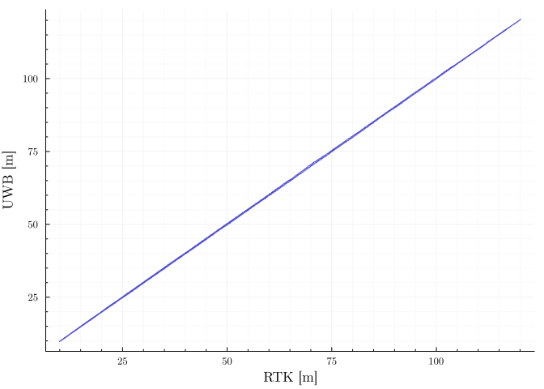
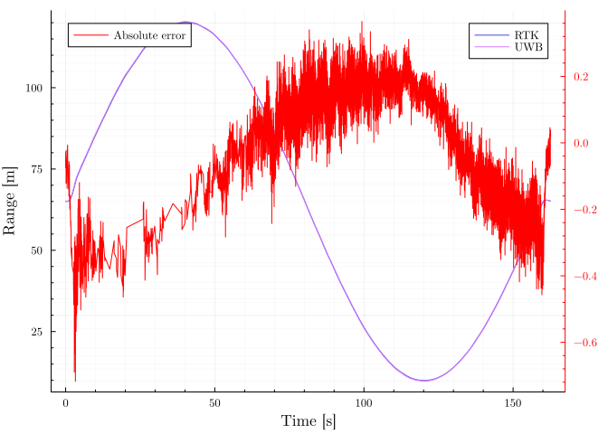
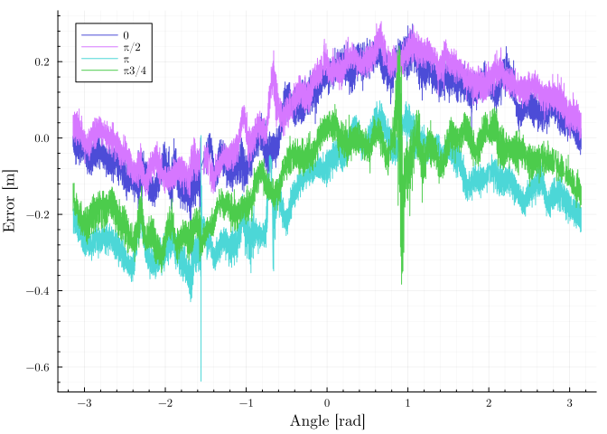

6 Simulations and real-world experiments
A series of experiments have been conducted to evaluate the performance of the proposed measurement system. Experiments took place at Temešvár and Císařský ostrov. A couple of Holybro X500 6.1 equipped with Qorvo DWM1000 has been chosen as a test platform. These drones were mainly chosen due to the RTK GNSS system onboard, which is crucial for evaluating accuracy and is used as source of ground truth.

6.0.1 Line segment test
This experiment aims to test maximum range and get transfer characteristic of the sensor. The first UAV purpose was to act as an observer and for the entire duration of the test stayed at position \(\left(0, 0, 0\right)\). Second UAV was flying in a trajectory predefined by parametric equation 6.1.
\[ \mathbf{position}(t) = \begin{pmatrix} 0 \\ 65 + 55 \sin (2 \pi t) \\ 5 \end{pmatrix}, \quad t \in \left(0, 1\right) \tag{6.1}\]
6.0.2 Circular trajectory
As it was noted before, the results from UWB should be the same for all orientations. To test whether that is a correct assumption, 4 experiments have been conducted. In each test one UAV acted as an observer and stayed stayed at position \(\left(0, 0, 0\right)\). The second UAV followed a circle of radius 10 m around the first UAV. The difference between the 4 experiments was relative angle respective to velocity vector.
6.0.3 Leader follower algorithm
To test the fusion of UVDAR and UWB in-loop, a leader-follower algorithm has been used. In this test, a leader UAV flies a preplanned trajectory. A follower UAV tries to follow the leader based only on UVDAR and UWB sensor fusion. The algorithm was inspired by [2].
6.1 Results
All proposed experiments were successfully conducted. The first experiment [Figure 6.2] showed that the UWB measurements are indeed precise and do not express any signs of nonlinearity. The maximum range of 120 m was reached by UWB, however, the measurements at the far end are not reliable and often drops out. This can be seen as straight lines in Figure 6.2. Somehow cite this [1]

